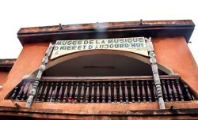

Musée de la musique

Crée par l'ASPAC(Association pour la sauvegarde du Patrimoine Cuturel), ce musée présente une grande variété d'instruments de musique traditionnelle telle que Tambour ,balafon,bara,doumdoum,flute ou harpe-luth;collectés auprès de différentes ethnies du Burkina Faso depuis 1993.la creation de ce musée dans une volonté de connaissance de respect,d'ouverture et d'accessibilité du patrimoine musical burkinabé à tous.Parmi les diverses activités du musée:Programmes pédagogiques,expositions temporaires,projections video